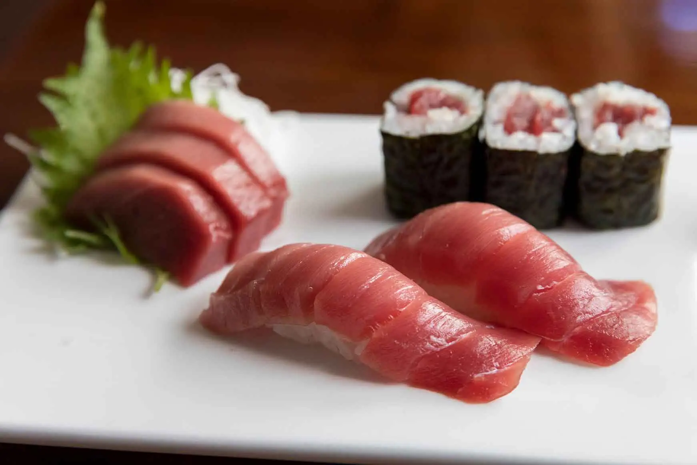

Nigiri Sushi

Blue Fin Tuna Nigiri Sushi
Ingredients
- High Quality Sashimi Grade Blue Fin Tuna
- Cooked Sushi Rice
- Freshly Grinded Wasabi paste
Steps
- Carefully take a slice of cut Blue Fin Tuna Sashimi
- With your other hand, grab an appropriate amount of Sushi Rice
- Apply slight pressure to mold the rice into shape
- Apply an appropriate amount of Wasabi paste on the bottom of the Sashmi
- Put the Sashmi on the rice and apply light pressure to mold them together